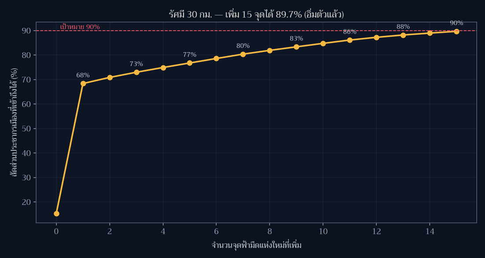

Day 8 · Utopia — ประเทศไทยที่ความมืดเป็นของสาธารณะ ต้องเพิ่มจุดฟ้ามืดกี่แห่ง

โจทย์ทางการของวันนี้คือ “A map of something which could be” — แผนที่ของสิ่งที่ อาจเป็นได้ ผมไม่อยากทำแผนที่เมืองในฝันแบบวาดเล่น จึงเอาคำถามของ Day 7 มาต่อยอดเป็นแผนที่นโยบาย: Day 7 พบว่าแค่ 0.03% ของพื้นที่ประเทศที่เดินถึงจุดฟ้ามืดใน 10 นาที วันนี้ถามกลับว่า ถ้าอยากให้ความมืดเป็นของสาธารณะจริง ต้องเพิ่มจุดที่ไหน อีกกี่แห่ง
ที่มาของแผนที่
“utopia” ต้องมี บรรทัดฐาน ชัด ๆ หนึ่งข้อ ไม่งั้นเป็นแค่แผนที่สวย ผมเลือกสามข้อ
- เป้าหมาย: ประชากรเมืองอย่างน้อย 90% ต้องอยู่ภายในรัศมี 30 กม. จากจุดฟ้ามืด (ประมาณครึ่งชั่วโมงจากบ้าน ยังไปกลับได้ในวันธรรมดา)
- ที่ที่จะตั้งจุดใหม่ได้: ต้องเป็น hex จาก Day 3 ที่ ไกล จากจุดในทะเบียน NARIT เกิน 25 กม. แปลว่าเลือกเฉพาะ “ที่ที่ยังมืดจริงแต่ยังไม่มีชื่อในทะเบียน” — ไม่ใช่ไปตั้งทับของเดิม ได้ผู้สมัคร 1,429 hex จาก 1,738 hex
- วิธีเลือก: greedy set cover —ทุกครั้งเลือกจุดที่เก็บประชากร ที่ยังไม่ถูกบริการ ได้มากที่สุด ทำซ้ำ 15 รอบจนอิ่มตัว
ข้อมูลเมืองมาจาก Natural Earth 10m populated places (79 เมือง, POP_MAX รวม 14.1 ล้านคน) และขอบประเทศใช้ Natural Earth 10m ตามมาตรฐานที่เพิ่งตั้งไว้ตั้งแต่ Day 8
ผลลัพธ์

คำตอบสั้น: เพิ่ม 15 แห่ง → จาก 15.2% เป็น 89.7% ของประชากรเมือง
| รัศมีเป้าหมาย | ทุกวันนี้ | ต้องเพิ่มกี่จุด | หลังเพิ่ม |
|---|---|---|---|
| 30 กม. (ครึ่งชั่วโมง) | 18/79 เมือง · 15.2% | 15 จุด | 48/79 เมือง · 89.7% |
| 60 กม. (หนึ่งชั่วโมง) | 44/79 เมือง · 28.2% | 14 จุด | 100% |
| 100 กม. (เที่ยวคืนเสาร์) | 71/79 เมือง · 94.7% | 5 จุด | 100% |
จุดที่ “แพงที่สุด” ในเชิงผลลัพธ์คือจุดแรก: ที่ละติจูด 13.854 ลองจิจูด 100.527 (แถวสุพรรณบุรี–นครปฐม) เก็บคนได้ถึง 7.5 ล้านคน ในรอบเดียว เพราะกรุงเทพ+ปริมณฑลทั้งก้อนอยู่นอกทะเบียนทั้งหมด จุดที่เหลือเก็บได้ 0.1–0.35 ล้านคนต่อจุด — เส้นโค้งอิ่มตัวชัดเจน

15 จุดที่แผนที่เสนอ
| # | ละติจูด | ลองจิจูด | เก็บประชากร | ไกลจากจุดเดิม |
|---|---|---|---|---|
| 1 | 13.854 | 100.527 | 7,505,882 | 83.9 กม. |
| 2 | 17.626 | 102.760 | 351,736 | 88.0 กม. |
| 3 | 6.671 | 101.203 | 298,140 | 83.0 กม. |
| 4 | 15.281 | 104.840 | 273,893 | 68.2 กม. |
| 5 | 8.398 | 99.719 | 260,558 | 123.7 กม. |
| 6 | 13.573 | 99.978 | 259,988 | 80.4 กม. |
| 7 | 16.278 | 102.658 | 251,056 | 42.0 กม. |
| 8 | 14.618 | 100.597 | 217,114 | 61.5 กม. |
| 9 | 18.095 | 99.592 | 204,081 | 79.1 กม. |
| 10 | 16.660 | 100.422 | 199,777 | 33.4 กม. |
| 11 | 7.671 | 99.817 | 191,342 | 90.1 กม. |
| 12 | 9.174 | 99.330 | 157,627 | 54.3 กม. |
| 13 | 15.542 | 100.089 | 134,134 | 34.2 กม. |
| 14 | 14.952 | 103.344 | 109,828 | 36.3 กม. |
| 15 | 14.013 | 101.196 | 101,066 | 47.0 กม. |
วิธีทำแบบย่อ
ขั้นที่ 1: ระยะทางแบบ haversine เป็นเมทริกซ์
def hav_km(a, b): # a:(N,2) b:(M,2) ของ (lon,lat) -> (N,M) กม.
la1, lo1 = np.radians(a[:,1][:,None]), np.radians(a[:,0][:,None])
la2, lo2 = np.radians(b[:,1][None,:]), np.radians(b[:,0][None,:])
d = np.sin((la2-la1)/2)**2 + np.cos(la1)*np.cos(la2)*np.sin((lo2-lo1)/2)**2
return 2*6371.0*np.arcsin(np.sqrt(d))ขั้นที่ 2: greedy set cover
covered = (hav_km(city, sites).min(axis=1) <= R) # สถานะวันนี้
for step in range(15):
gain = [pop[(~covered) & (d_city_cand[:, j] <= R)].sum() for j in range(len(cand))]
j = int(np.argmax(gain))
if gain[j] <= 0: break # อิ่มตัวแล้ว
covered |= (d_city_cand[:, j] <= R)ขั้นที่ 3: ตรวจก่อนวาด (กติกาของซีรีส์)
assert len(chosen) == len({(round(c["lat"],4), round(c["lon"],4)) for c in chosen})
assert all(c["km_nearest_existing"] > 25 for c in chosen) # ไม่ตั้งทับของเดิม
assert covered.sum() >= base[R].sum() # ความครอบคลุมไม่ลดลงข้อจำกัดที่ต้องบอกตรง ๆ
- ประชากร 14.1 ล้านคนนั้นคือ “ประชากรเมือง” ในชุดข้อมูล Natural Earth ไม่ใช่ประชากรไทย ทั้งประเทศ (~66 ล้าน) ตัวเลข % จึงหมายถึง คนที่อยู่ในเมืองที่ถูกบันทึก เท่านั้น
- ระยะทางเป็นเส้นตรง ไม่ใช่เวลาเดินทางจริง — เทือกเขาและแม่น้ำหายไปจากสมการ ถ้าจะจริงจังต้องใช้ isochrone จากถนน (Mapbox/OSRM) และนั่นคือแผนที่อีกแผ่นหนึ่ง
- ความมืดวัดจาก proxy ที่วนตัวเอง: ผู้สมัครคือ hex ที่
km_nearest > 25 กม.ซึ่งkm_nearestคือระยะถึงจุด ในทะเบียน ไม่ใช่ค่าความมืดที่วัดด้วยเครื่อง แปลว่าแผนที่นี้ตอบ “ตั้งที่ไหนจึงบริการคนได้มาก” แต่ไม่ตอบ “ที่ไหนฟ้ามืดจริง” คำตอบที่ถูกต้องต้องใช้ข้อมูล VIIRS/DMSP หรือการวัดภาคสนาม - hex grid resolution 5 (~258 ตร.กม./บล็อก) ทำให้ตำแหน่งที่เสนอหยาบระดับ 10 กม.
ไฟล์ประกอบ
พิกัด 15 จุดที่แบบจำลองเสนอ พร้อมจำนวนคนที่แต่ละจุดเก็บได้ และสถานะก่อน–หลังของทั้งสามรัศมี
บทเรียน
- แผนที่ utopia ต้องมีตัวเลขกำกับความฝัน — “ความมืดเป็นของสาธารณะ” เป็นคำสวย แต่พอบอกว่า “เพิ่ม 15 จุด ขยับจาก 15% เป็น 90%” มันกลายเป็นสิ่งที่ถกเถียงและตรวจสอบได้
- greedy ให้คำตอบที่ดี แต่ไม่ใช่คำตอบที่ดีที่สุด และนั่นโอเค — ใน 10–15 จุดแรกมันกิน population ที่กระจุกตัว ถ้าอยากได้ optimal ต้อง solve set-cover จริง (integer programming) ซึ่งเปลี่ยนคำถามจาก “ที่ไหน” เป็น “ที่ไหน + งบเท่าไหร่”
- จุดเดียวใกล้กรุงเทพมีน้ำหนักเท่าอีก 14 จุดรวมกัน — การกระจาย “ความเท่าเทียม” ไม่ใช่การกระจาย “พื้นที่” แผนที่แบบ area-weighted (Day 3) กับ people-weighted ให้คำตอบ คนละเรื่อง และคนละนโยบาย
- proxy ที่วนตัวเองต้องประกาศ — ผมใช้ระยะถึงทะเบียนเป็นตัวแทนความมืด ซึ่งทำให้ แผนที่นี้ตอบคำถามการเข้าถึงได้ดี แต่ตอบคำถาม “ที่ไหนมืดจริง” ไม่ได้ ถ้าไม่เขียนกำกับไว้ คนอ่านจะเข้าใจผิดว่าดาวสีเหลืองคือ “ที่ที่ฟ้ามืดที่สุด” ซึ่งไม่ใช่
- ใช้ Natural Earth 10m ทั้งขอบประเทศและข้อมูลเมือง ตามมาตรฐานที่ประกาศไว้ในหมายเหตุ เรื่องขอบประเทศของ Day 1–7 ทำให้แผ่นนี้กับ Day 6–7 เส้นฝั่งตรงกันแล้ว
พรุ่งนี้ธีม Urban-rural (Day 9) — ต่อจากแผ่นนี้ได้พอดี เพราะคำถาม “เมืองกับชนบท” ในบริบทนี้คือ ใครมีสิทธิ์มองเห็นทางช้างเผือก